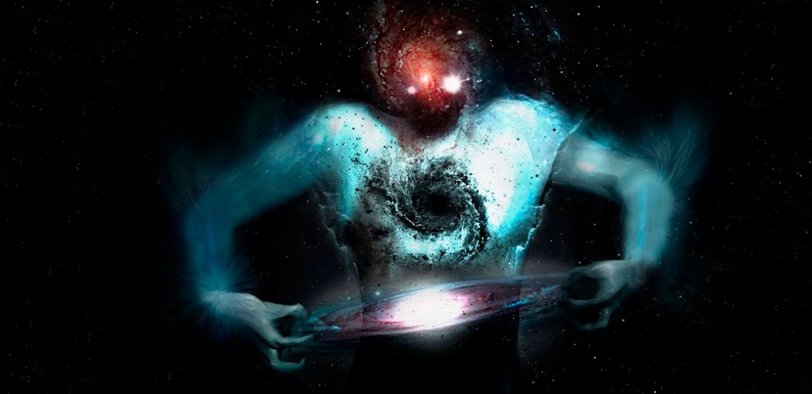
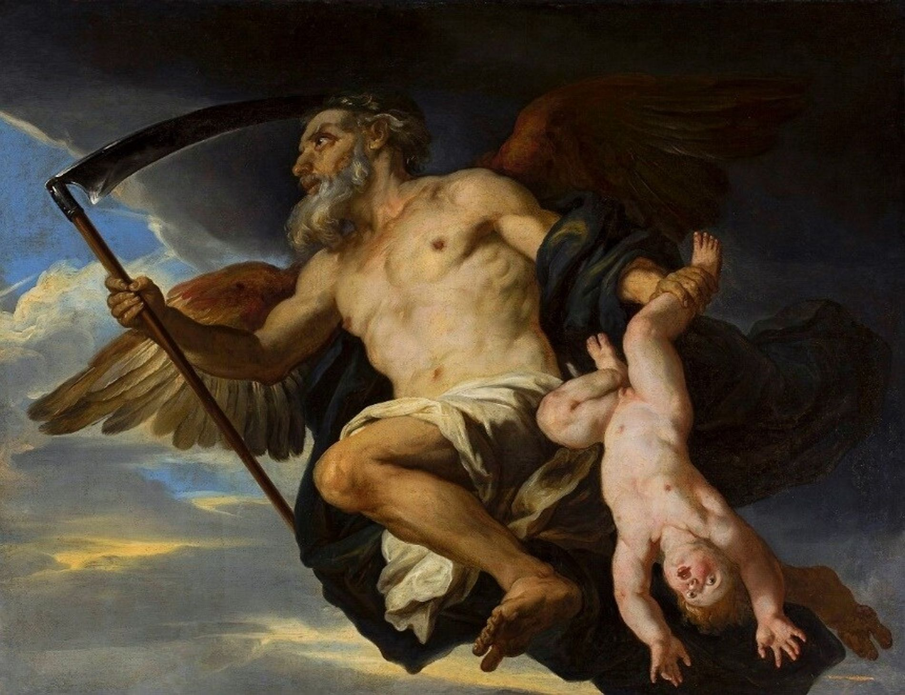

01
A Era Primordial
No início existia apenas o Caos (o vazio). Dele surgiram Gaia (a Terra), Tártaro (o abismo) e Eros (o amor). Gaia gerou sozinha Urano (o Céu), e juntos eles deram origem aos Titãs.

A origem do universo grego é marcada pela transição do caos para a ordem.
No início existia apenas o Caos (o vazio). Dele surgiram Gaia (a Terra), Tártaro (o abismo) e Eros (o amor). Gaia gerou sozinha Urano (o Céu), e juntos eles deram origem aos Titãs.

Urano temia seus filhos e os mantinha presos. Cronos, o mais jovem dos Titãs, castrou o pai e assumiu o controle. Porém, Cronos também se tornou tirânico e passou a devorar seus próprios filhos para evitar que fosse destronado.

Reia, esposa de Cronos, conseguiu salvar seu filho caçula, Zeus. Ao crescer, Zeus forçou o pai a libertar seus irmãos e liderou uma guerra de 10 anos contra os Titãs, chamada de Titanomaquia. Com a vitória, os deuses estabeleceram sua morada no Monte Olimpo.